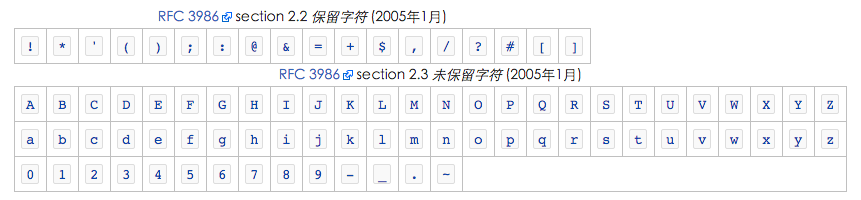

Url编码
昨天在接华为的渠道sdk，通过把华为返回的accesstoken拼接到url中访问服务器登陆接口。
上午还是很正常的访问，下午就突然不能访问，服务器端查了下，原因是accesstoken中有一个”+”号.
“+”是url中的保留字，不能在url的内容中出现，所以需要把accesstoken UrlEncode后再拼接到url中去访问服务器。
这个问题在四年前就遇到过，这次还掉坑里，在这纪录一下。
URI的百分号编码
URI中分为保留字和非保留字，保留字是有特殊含义的字段.

对于保留字可以采用百分号编码，首先需要把该字符的ASCII的值表示为两个16进制的数字，然后在其前面放置转义字符“％”。
未保留字也可以采用相同的方式来编码，字符当前的标准是把字符专为UTF－8字序，然后对每个字节百分号编码，下面参考文档的链接就是这样。
参考文档
https://zh.wikipedia.org/wiki/%E7%99%BE%E5%88%86%E5%8F%B7%E7%BC%96%E7%A0%81